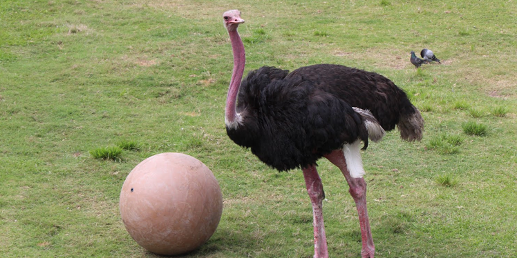

Ostrich
AKA: Male: Rooster Female: Hen Scientific Name: Struthio camelus Family: Struthionidae Species: Struthio camelus Speed: 70 km/h Length: Male: 210 – 280 cm Female: 170 – 200 cm Mass: Male: 120 kg Female: 100 kg Wing Span: 150 – 200 cm Life Span: 40 – 60 years Location: Africa, Arabia. Diet: Roots, leaves, and seeds. Also eats invertebrates.
Appearance:
It has the largest eye, long neck and legs. The neck and head are nearly bare. The feathers of a young male and female are grayish-brown and white. While adults have mostly black feathers.
Facts:
- By height, it is the biggest bird.
- It has the fastest land speed (up to 70 km/h).
- It attacks with a kick of its powerful legs.
- It has three stomachs and can eat such things that other animals cannot digest.
- In some countries of Africa, people race with each other on the back of ostriches